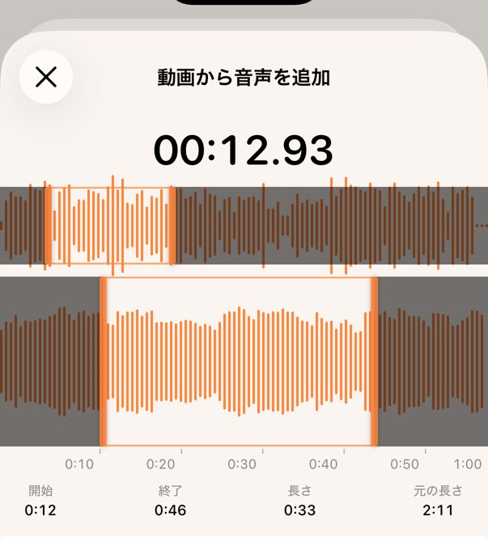
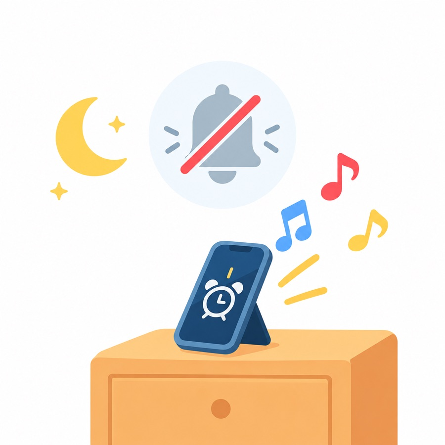

好きな曲の、好きなところで起きる
曲のいちばん好きな部分や動画の音を、iPhone のアラームに。止めるまで、くり返し鳴ります。

マナーモードや集中モードでも鳴ります。iOS 26 以降の iPhone 向け。
鳴らす部分を選ぶ
音声ファイル、自分で録音した声、保存した動画を開いて、波形の上で範囲を選ぶだけ。サビの20〜30秒がちょうどいい長さです。最後まで鳴ったら、また最初から鳴ります。

マナーモードでも鳴る

アラームは、iOS 26 で Apple が用意した AlarmKit で登録します。時計アプリのアラームと同じようにロック画面に表示され、マナーモードや集中モードでも、アプリを閉じていても鳴ります。
App Store のレビュー
App Store で 20 の国と地域から 65 件の評価（2026年10月27日時点）。
- ★★★★★
This app is the goat.
It contains what i really wanted, thank you for creating this app.最高のアプリ。本当にほしかったものが入っていました。作ってくれてありがとう。
- ★★★☆☆
Enlever les vibrations
Super application qui fonctionne très bien, même en mode avion, ne pas déranger etc Seul bémol il est impossible depuis l’application d’enlever les vibrations ou de les modifierとてもよく動くアプリ。機内モードやおやすみモードでも鳴ります。唯一の難点は、アプリからバイブレーションを切ったり変えたりできないこと。
- ★★★★★
Simply what I want for an alarm clock
目覚ましに求めていたものそのもの
これまでに書かれたレビューを原文のまま載せています（1件はタイトルのみ）。訳は当サイトによるものです。
よくある質問
iPhone で好きな曲をアラームにするには？
時計アプリでもライブラリの曲を選べますが、鳴るのは曲の頭からです。My Sound Alarm なら、音声ファイル（MP3・AAC・WAV・M4A）や動画を開いて、波形で好きな部分を選び、アラームの音として保存できます。
Apple Music や Spotify の曲は使えますか？
使えません。配信サービスの曲は保護されているため取り込めません。ファイルアプリに保存した音声ファイル、自分で録音した声、写真ライブラリの動画が使えます。
動画の音もアラームにできますか？
できます。写真ライブラリやファイルアプリから動画を選ぶと、音声を取り出します。どの部分を鳴らすかも選べます。
自作の着信音のような40秒の制限はありますか？
ありません。自作の着信音は約40秒までですが、My Sound Alarm では動画から最長10分、長い音声ファイルもそのまま取り込めます。くり返し鳴るので、短い部分がおすすめです。
マナーモードや集中モード、アプリを閉じているときも鳴りますか？
最初に表示される「アラーム」の許可をオンにしていれば鳴ります。Apple の AlarmKit でアラームを登録するので、アプリが起動していなくても鳴ります。
アラームの音を大きくするには？
アラームの音量は「設定 → サウンドと触覚 →『着信音と通知音』」で決まります。「ボタンで変更」をオンにすると、本体の音量ボタンでも変えられます。コントロールセンターの音量は音楽や動画の音量で、アラームには効きません。
明日の朝は、好きなサビで起きる。